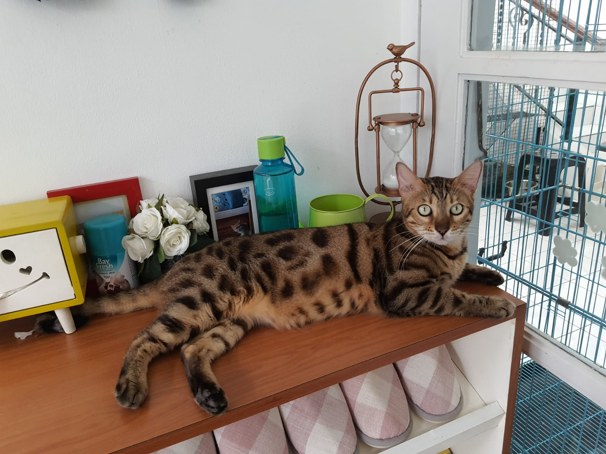

Tabby Cat House" sepertinya adalah istilah yang mungkin mengacu pada rumah atau tempat perlindungan khusus untuk kucing tabby. Kucing tabby adalah jenis kucing dengan pola bulu khas yang seringkali melibatkan garis-garis, bercak, atau motif lainnya.
Jika ada suatu tempat atau bisnis yang disebut "Tabby Cat House," itu mungkin merupakan tempat penitipan atau kafe kucing yang menawarkan lingkungan yang nyaman dan ramah untuk kucing tabby atau kucing pada umumnya. Tempat seperti ini biasanya menyediakan berbagai fasilitas dan layanan untuk kucing, seperti tempat bermain, tempat tidur yang nyaman, dan mungkin juga perawatan khusus.
Pendahuluan
"Tabby Cat House" adalah tempat khusus yang menyediakan berbagai layanan untuk kucing, menciptakan lingkungan yang nyaman dan menyenangkan bagi pemilik kucing dan kucing itu sendiri. Berikut adalah deskripsi tentang fasilitas yang tersedia:
1.Cat Cafe:Tempat ini menyediakan suasana santai di mana pengunjung dapat menikmati waktu bersantai sambil menikmati minuman atau makanan, sembari berinteraksi dengan kucing-kucing tabby yang berkeliaran di sekitar kafe.
2.Clinic:Fasilitas ini menyediakan layanan kesehatan untuk kucing, termasuk pemeriksaan rutin, vaksinasi, dan perawatan medis lainnya. Dengan adanya klinik, pemilik kucing dapat memastikan kesehatan dan kesejahteraan hewan peliharaan mereka.
3.Grooming:Layanan grooming mencakup perawatan bulu, mandi, pemotongan kuku, dan perawatan kecantikan lainnya. Kucing-kucing tabby dapat dinikmati dan dimanjakan dengan perawatan khusus untuk menjaga penampilan mereka.
4.Cat Hotel:Jika pemilik kucing perlu meninggalkan kucing mereka untuk sementara waktu, Cat Hotel menyediakan fasilitas penitipan khusus dengan perawatan dan perhatian penuh terhadap kucing. Ini mencakup tempat tidur yang nyaman dan area bermain.
5.Cat Shop:Di Cat Shop, pengunjung dapat menemukan berbagai produk berkualitas tinggi untuk kucing, termasuk makanan kucing, mainan, perlengkapan perawatan, dan aksesori lainnya. Ini memungkinkan pemilik kucing untuk membeli kebutuhan kucing mereka secara mudah.
Dengan menyatukan semua layanan ini, Tabby Cat House menjadi tempat yang komprehensif untuk segala kebutuhan kucing dan pemilik kucing, menciptakan komunitas yang peduli terhadap kesejahteraan hewan peliharaan.
TABBY CAT HOUSE'S GALLERY

Grooming
Grooming di Tabby menggunakan shampo khusus sesuai dengan kebutuhan rambut anabul Anda, kami ada 3 jenis grooming, antara lain :
1.Grooming mandi biasa
2.Grooming treatment (jamur dan kutu)
3.Groomimg SPA
Grooming sudah termasuk bersihkan kuping dengan cairan khusus kuping, potong kuku dan cukur bagian bulu belakang.
1 kucing menggunakan 1 handuk bersih
Grooming kucing adalah proses merawat dan menjaga kebersihan bulu serta kesehatan umum kucing.
Ini mencakup menyikat bulu, membersihkan telinga, memotong kuku, dan memandikan kucing jika diperlukan.
Grooming kucing tidak hanya membuatnya tetap bersih,
tetapi juga dapat membantu mencegah masalah kesehatan seperti bola bulu dan infestasi parasit
Grooming treatment untuk jamur dan kutu pada kucing melibatkan langkah-langkah perawatan yang menggunakan produk atau metode tertentu untuk menghadapi atau mencegah infestasi jamur atau kutu di bulu dan kulit kucing. Ini bisa termasuk penggunaan sampo khusus, obat anti-kutu, dan sikat bulu untuk menghilangkan telur kutu, serta tindakan pencegahan lainnya. Tujuannya adalah menjaga kesehatan dan kebersihan kucing, serta mencegah atau mengatasi masalah kulit yang mungkin timbul akibat jamur atau kutu.
.
Grooming SPA untuk kucing melibatkan serangkaian perawatan yang lebih eksklusif dan menyeluruh guna meningkatkan kesehatan dan kenyamanan kucing, di luar perawatan harian biasa. Ini mencakup mandi dengan sampo khusus, pijatan lembut, penggunaan produk perawatan kulit dan bulu berkualitas tinggi, serta perawatan ekstra seperti pemotongan kuku, pembersihan telinga, dan merapikan bulu.
Grooming SPA tidak hanya fokus pada kebersihan fisik kucing, tetapi juga bertujuan memberikan pengalaman yang menyenangkan dan menenangkan bagi mereka. Beberapa pemilik kucing mungkin memilih layanan grooming SPA sebagai cara untuk memanjakan dan memberikan perhatian khusus pada kucing mereka. Penting untuk selalu memastikan bahwa prosedur grooming dilakukan dengan kehati-hatian, memperhatikan kenyamanan dan keamanan kucing.
Clinic Tabby Cat House
Clinic Tabby Cat House adalah tempat kesehatan kucing yang ramah dan inovatif. Dengan tim profesional yang peduli terhadap kesejahteraan kucing, mereka menawarkan layanan kesehatan yang komprehensif, mulai dari perawatan rutin hingga penanganan masalah kesehatan khusus. Suasana klinik yang hangat dan nyaman menciptakan pengalaman positif bagi kedua pemilik dan kucing mereka. Dengan fokus pada pelayanan dan perhatian personal, Clinic Tabby Cat House menjadi pilihan utama bagi para pecinta kucing yang mengutamakan kesehatan dan kebahagiaan hewan peliharaan mereka.
Cat Hotel adalah tempat eksklusif bagi kucing untuk menginap, dengan fasilitas khusus untuk kesejahteraan mereka. Dengan tempat tidur nyaman dan area bermain, pengalaman menginap di Cat Hotel memberikan ketenangan dan keamanan bagi kucing peliharaan.
Di sisi lain, Cat Cafe adalah tempat unik yang menggabungkan kopi dengan kehadiran kucing. Suasana ramah dan kucing yang berkeliaran bebas memungkinkan pengunjung menikmati minuman favorit sambil berinteraksi dengan kucing yang lucu. Cat Cafe bukan hanya tempat bersantai, tetapi juga peluang untuk mengadopsi kucing yang mencari rumah baru.